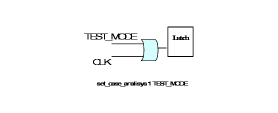
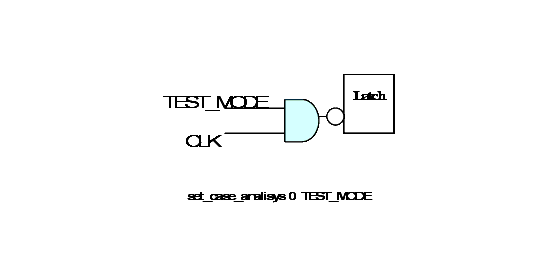
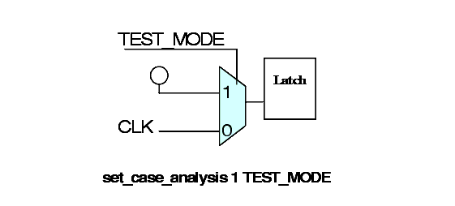

| Description | During test mode, the gate signal of latch need to be through, to reduce fault coverage. |
| Policy | DESIGN |
| Ruleset | DFT |
| Language | VHDL/Verilog |
| Type | Hardware |
| Severity | Warning |
This is an example of Verilog code, followed by a circuit diagram that illustrates the rule:
module top (Q1, Q2, D1, D2, G1, G2, TE); output Q1, Q2; input D1, D2, G1, G2, TE; GTECH_LD1 U1 ( .D(D1), .G(G1), .Q(Q1)); // ok if G1 is set to 1, //else it fails GTECH_NOR2 U2 (.Z(G2_I), .A(G2), .B(TE));// ok if TE is set to 1, // else it fails GTECH_LD1 U3 ( .D(D2), .G(G2_I), .Q(Q2)); endmodule

